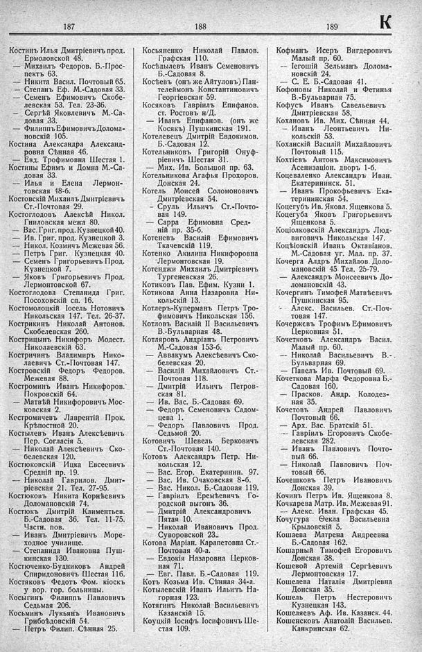

Лист источника 413
Скан

Распознанный текст
187
Костинъ Илья Дмитріевичъ прод.
Ермоловской 48.
— Михаилъ Федоров. Б.-Прос-
пектъ 63.
— Никита Васил. Почтовый 65.
— Степанъ Еф. М.-Садовая 33.
— Семенъ Ефимовичъ Скобе-
левская 53. Тел. 23-36.
— Сергѣй Яковлевичъ М.-Са-
довая 33.
— Филиппъ Ефимовичъ Долома-
новскій 105.
Костина Александра Александ-
ровна Сѣнная 46.
— Евд. Трофимовна Шестая 1.
Костины Ефимъ и Домна М.-Са-
довая 33.
— Илья и Елена Лермон-
товская 18-б.
Костовскій Михаилъ Дмитріевичъ
Ст.-Почтовая 29.
Костоглодовъ Алексѣй Никол.
Гниловская межа 80.
— Вас. Григ. прод. Кузнецкой 40.
— Ив. Григ. прод. Кузнецкой 3.
— Никол. Козмичъ Межевая 56.
— Петръ Григ. Кузнецкая 40.
— Семенъ Григорьевичъ Прод.
Кузнецкой 7.
— Яковъ Григорьевичъ Прод.
Лермонтовской 67.
Костоглодова Степанида Григ.
Посоховскій сп. 16.
Костомолоцкій Іосель Нотовичъ
Никольская 147. Тел. 26-37.
Кострикинъ Николай Антонов.
Скобелевская 260.
Кострицынъ Никифоръ Модест.
Николаевскій 63.
Костричинъ Владимиръ Нико-
лаевичъ Ст.-Почтовая 147.
Костровскій Федоръ Федоров.
Межевая 88.
Костроминъ Иванъ Никифоров.
Покровскій 64.
— Матвѣй Никифоровичъ Мос-
ковская 2.
Кестромичевъ Лаврентій Прок.
Крѣпостной 20.
Костылевъ Иванъ Алексѣевичъ
Пер. Согласія 5.
— Николай Алексѣевичъ Ско-
белевская 120.
Костюковскій Ицка Евсеевичъ
Средній пр. 19.
— Николай Гаврилов. Дмит-
ріевская 21. Тел. 27-95.
Костюковъ Никита Корнѣевичъ
Доломановскій 74.
Костюкъ Дмитрій Климентьев.
Б.-Садовая 36. Тел. 11-75.
Частн. пов.
— Иванъ Дмитріевичъ Море-
ходное училище.
— Степанида Ивановна Пуш-
кинская 130.
Костюченко-Будниковъ Андрей
Спиридоновичъ Шестая 116.
Костяковъ Федотъ Фом. кіоскъ
у вор. гор. больницы.
Косыгинъ Филиппъ Павловичъ
Седьмая 206.
Косьминъ Лукьянъ Ивановичъ
Грибоѣдовскій 54.
— Петръ Филип. Сѣнная 25.
188
Косьяненко Николай Павлов.
Графская 110.
Косѣдылевъ Иванъ Семеновичъ
Б.-Садовая 8.
Косѣевъ (онъ же Айтуловъ) Пан-
телеймонъ Константиновичъ
Георгіевская 59.
Косяковъ Гавріилъ Епифанов.
ст. Ростовъ н/Д.
— Иванъ Епифанов. (онъ же
Косякъ) Пушкинская 191.
Котелевецъ Дмитрій Евдокимов.
Б.-Садовая 12.
Котельниковъ Григорій Онуф-
ріевичъ Шестая 31.
— Мих. Ив. Большой пр. 63.
Котельникова Агафья Прохоров.
Донская 24.
Котель Моисей Соломоновичъ
Дмитріевская 54.
— Сруль Ильичъ Ст.-Почто-
вая 149.
— Сарра Ефимовна Сред-
ній пр. 35-б.
Котеневъ Василій Ефимовичъ
Ткачевскій 119.
Котенко Акилина Никифоровна
Лермонтовская 19.
Котенджи Михаилъ Дмитріевичъ
Тургеневская 26.
Котиковъ Пав. Ефим. Кузни 1.
Котикова Анна Назаровна Ни-
кольскій 13.
Котлеръ-Куперманъ Петръ Тро-
фимовичъ Никольская 156.
Котловъ Василій II Васильевичъ
В.-Бульварная 48.
Котляровъ Андріанъ Петровичъ
М.-Садовая 153-б.
— Аввакумъ Алексѣевичъ Ско-
белевская 20.
— Василій Михайловичъ Ст.-
Почтовая 118.
— Дмитрій Ильичъ Петров-
ская 81.
— Ив. Вас. Б.-Садовая 69.
— Федоръ Семеновичъ Садом-
цева 1.
— Федоръ Павловичъ Прод.
Седьмой 20.
Котовичъ Шевель Берковичъ
Ст.-Почтовая 140.
Котовъ Александръ Петр. Ни-
кольская 12.
— Вас. Егор. Екатеринин. 97.
— Вас. Ив. Очаковская 8-б.
— Вас. Никол. Б.-Садовая 119.
— Гавріилъ Еремѣевичъ Го-
родской выгонъ 36.
— Дмитрій Александровичъ
Пятая 10.
— Николай Ивановичъ Прод.
Суворовской 23.
Котова Маріан. Карапетовна Ст.-
Почтовая 40-а.
— Евдокія Назаровна Церков-
ная 71.
— Евг. Павл. Б.-Садовая 119.
Котъ Козьма Ив. Сѣнная 34-а.
Котылевскій Иванъ Ильичъ На-
горная 123.
Котягинъ Николай Васильевичъ
Казанскій 15.
Коуцкій Іосифъ Іосифовичъ Ше-
стая 109.
189
К
Кофманъ Исеръ Вигдеровичъ
Малый пр. 60.
— Іегошій Зельманъ Долома-
новскій 24.
— С. Е. Б.-Садовая 41.
Кофоновы Николай и Фетинья
В.-Бульварная 75.
Кофусъ Иванъ Савельевичъ
Дмитріевская 58.
Кохановъ Ив. Мих. Сѣнная 44.
— Иванъ Леонтьевичъ Ни-
кольскій 53.
Коханскій Василій Михайловичъ
Почтовый 115.
Кохтіевъ Антонъ Максимовичъ
Асенизаціон. дворъ 1-б.
Коцеваленко Александръ Иван.
Екатерининск. 51.
— Иванъ Прокофьевичъ Ека-
терининская 54.
Коцегубъ Ив. Яковл. Ященкова 5.
Коцегуба Яковъ Григорьевичъ
Ященкова 5.
Коціолковскій Александръ Люд-
виговичъ Никольская 147.
Коціовскій Иванъ Октавіанов.
М.-Садовая уг. Мал. пр. 37.
Кочерга Алдръ Михайлов. Доло-
мановскій 45 Тел. 25-79.
— Александръ Моисеевичъ До-
ломановскій 43.
Кочергинъ Тимофей Матвѣевичъ
Пушкинская 95.
— Алекс. Васильев. Ст.-Поч-
товая 147.
Кочержевъ Трофимъ Ефимовичъ
Церковная 51.
Кочетковъ Александръ Васил.
Малый пр. 60.
— Николай Васильевичъ В.-.
Бульварная 69.
— Павелъ Ив. Почтовый 69.
Кочеткова Марфа Федоровна Б.-
Садовая 160.
— Прасков. Андр. Колодез-
ная 35.
Кочетовъ Андрей Павловичъ
Почтовый 66.
— Арх. Вас. Братскій 51.
— Гавріилъ Егоровичъ Скобе-
левская 282.
— Иванъ Павловичъ Почто-
вый 66.
— Николай Павловичъ Поч-
товый 66.
Кочешковъ Петръ Ивановичъ
Донская 39.
Кочинъ Петръ Ив. Ященкова 8.
Кочкарева Матр. Ив. Межевая 91.
— Алекс. Иван. Графская 45.
Кочугура Ѳекла Васильевна
Крыловскій 5.
Кошаева Матрена Андреевна
Б.-Садовая 162.
Кошарный Тимофей Егоровичъ
Донская 38.
Кошевой Артемій Сергѣевичъ
Лермонтовская 17.
Кошелева Наталія Дмитріевна
Донская 35.
Кошель Петръ Нестеровичъ
Кузнецкая 143.
Кошеляевъ Аф. Ив. Казанск. 44.
Кошенсковъ Анатолій Васильев.
Канкринская 62.